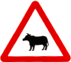

<!DOCTYPE html>
<html>

<head>
    <meta name="viewport" content="initial-scale=1.0, width=device-width" />
    <meta http-equiv="Content-Type" content="text/html; charset=utf-8">
    <link rel="stylesheet" href="https://unpkg.com/leaflet@1.6.0/dist/leaflet.css"
        integrity="sha512-xwE/Az9zrjBIphAcBb3F6JVqxf46+CDLwfLMHloNu6KEQCAWi6HcDUbeOfBIptF7tcCzusKFjFw2yuvEpDL9wQ=="
        crossorigin="" />
    <script src="https://unpkg.com/leaflet@1.6.0/dist/leaflet.js"
        integrity="sha512-gZwIG9x3wUXg2hdXF6+rVkLF/0Vi9U8D2Ntg4Ga5I5BZpVkVxlJWbSQtXPSiUTtC0TjtGOmxa1AJPuV0CPthew=="
        crossorigin=""></script>
    <script src="https://code.jquery.com/jquery-3.4.0.min.js"
        integrity="sha256-BJeo0qm959uMBGb65z40ejJYGSgR7REI4+CW1fNKwOg=" crossorigin="anonymous"></script>
    <script src='https://npmcdn.com/@turf/turf/turf.min.js'></script>
    <script src="./scripts/alertifyjs/alertify.min.js"></script>
    <link rel="stylesheet" href="./scripts/alertifyjs/css/alertify.min.css" />
    <link rel="stylesheet" href="./scripts/alertifyjs/css/themes/default.min.css" />
    <style>
        html,
        body {
            padding: 0;
            margin: 0;
        }

        html,
        body,
        #map {
            width: 100vw;
            height: 100%;
            position: relative;
        }
    </style>
</head>

<body>
    <div id="map" class="map">
        <script type="text/javascript" charset="UTF-8">
            alertify.defaults = {
                notifier: {
                    delay: 1,
                    position: 'top-center',
                }
            };
            var he_apikey = 'Q9xlj7u7mi-hAQwQi1NUIEaDXgj18f5zJ1iI-cuzSyQ';
            var he_xyz_roadkill_token = 'AHcNbIhdQfytn4uEUxar6AA';
            var he_xyz_roadkill_road_space_id = 'xVHzxzsl'; // twn_roadkill_roads_min.geojson
            var he_xyz_roadkill_icon_space_id = 'ppwW5xZ4'; // twn_roadkill_roads_icon_location_min.geojson
            var he_xyz_animal_crossing_sign_space_id = '4qRA5sz4'; // twn_roadkill_roads_icon_location_min.geojson
            var he_xyz_roadkill_bigdata_space_id = '9OoYKUad'; // twn_roadkill_roads_icon_location_min.geojson
            var heatmap_max = 15;
            var pixelRatio = window.devicePixelRatio || 1;
            var width = screen.width;
            var height = screen.height;
            var screenRatio = screen.width / screen.height;
            var pixelRatio = window.devicePixelRatio || 1;
            var ppi = pixelRatio === 1 ? 72 : 320
            var tile_size = pixelRatio === 1 ? 256 : 512
            var road_Polyline_list = [];
            var heatmap_layer_loaded = false;
            var heatmap_layer_opened = false;
            var default_icon_size = pixelRatio === 1 ? 36 : 24;
            var default_icon_anchor = pixelRatio === 1 ? 18 : 12;
            var map = L.map('map', {
                maxZoom: 17
            }).setView({
                lat: 23.749408835677244,
                lng: 121.00495296263927
            }, 8);
            var taiwan_boundary;
            $.getJSON('https://aquawill.github.io/taiwan_roadkill_map/assets/twn_simplified.geojson', function (value) {
                taiwan_boundary = value;
                L.geoJSON(value).addTo(map);
            })
            
            var OpenStreetMap_Mapnik = L.tileLayer('https://{s}.tile.openstreetmap.org/{z}/{x}/{y}.png', {
                maxZoom: 19,
                opacity: 0.8,
                detectRetina: true,
                attribution: '&copy; <a href="https://www.openstreetmap.org/copyright">OpenStreetMap</a> contributors'
            }).addTo(map);

            var OpenTopoMap = L.tileLayer('https://{s}.tile.opentopomap.org/{z}/{x}/{y}.png', {
                maxZoom: 17,
                detectRetina: true,
                attribution: 'Map data: &copy; <a href="https://www.openstreetmap.org/copyright">OpenStreetMap</a> contributors, <a href="http://viewfinderpanoramas.org">SRTM</a> | Map style: &copy; <a href="https://opentopomap.org">OpenTopoMap</a> (<a href="https://creativecommons.org/licenses/by-sa/3.0/">CC-BY-SA</a>)'
            });

            var Esri_WorldImagery = L.tileLayer(
                'https://server.arcgisonline.com/ArcGIS/rest/services/World_Imagery/MapServer/tile/{z}/{y}/{x}', {
                    attribution: 'Tiles &copy; Esri &mdash; Source: Esri, i-cubed, USDA, USGS, AEX, GeoEye, Getmapping, Aerogrid, IGN, IGP, UPR-EGP, and the GIS User Community'
                });

            var roadkill_hotspot_group = new L.featureGroup(),
                animal_sign_group = new L.featureGroup(),
                roadkill_bigdata_location_group = new L.featureGroup();
            roadkill_hotspot_group.addTo(map);
            roadkill_hotspot_group.on('add', function () {
                alertify.message('開啟路殺熱點路段');
            })
            roadkill_hotspot_group.on('remove', function () {
                alertify.message('關閉路殺熱點路段');
            })
            animal_sign_group.on('add', function () {
                alertify.message('開啟動物警告標誌');
            })
            animal_sign_group.on('remove', function () {
                alertify.message('關閉動物警告標誌');
            })
            roadkill_bigdata_location_group.on('add', function () {
                alertify.message('開啟路殺歷史大數據');
                heatmap_layer_opened = true;
            })
            roadkill_bigdata_location_group.on('remove', function () {
                alertify.message('關閉路殺歷史大數據');
                heatmap_layer_opened = false;
            })

            L.control.scale().addTo(map);
            L.control.layers({
                "一般地圖": OpenStreetMap_Mapnik,
                "地形圖": OpenTopoMap,
                "衛星影像": Esri_WorldImagery,
            }, {
                ' 路殺熱點路段': roadkill_hotspot_group,
                ' 動物警告標誌': animal_sign_group,
                ' 路殺歷史大數據': roadkill_bigdata_location_group,
            }, {
                collapsed: false,
                hideSingleBase: true
            }).addTo(map);

            function get_roadkill_bigdata_locations(west, north, east, south) {
                var xyz_roadkill_bigdata_bbox_url = 'https://xyz.api.here.com/hub/spaces/' +
                    he_xyz_roadkill_bigdata_space_id + '/bbox?access_token=' + he_xyz_roadkill_token + '&west=' + west +
                    '&north=' + north + '&east=' + east + '&south=' + south;
                $.getJSON(xyz_roadkill_bigdata_bbox_url, function (value) {
                    var features = value.features;
                    features.forEach(function (item, index) {
                        var geometry = item.geometry,
                            lat = geometry.coordinates[1],
                            lng = geometry.coordinates[0],
                            properties = item.properties;
                        icon_location = {
                            lat: lat,
                            lng: lng
                        };
                        var roadkill_bigdata_marker = new L.marker(icon_location, {
                            icon: new L.icon({
                                iconUrl: getKilledIcon(properties.type),
                                iconSize: [default_icon_size / 2, default_icon_size /
                                    2
                                ],
                                iconAnchor: [default_icon_anchor / 2,
                                    default_icon_anchor / 2
                                ]
                            })
                        });
                        var roadkill_marker_popup = new L.popup();
                        roadkill_marker_popup.setLatLng(icon_location);
                        roadkill_marker_popup.setContent(
                            '<table border="1" style="font-size:14px;font-family:serif;" cellpadding="0"><tr><th colspan="2">' +
                            properties.id + '</th></tr><tr><td>種類</td><td>' + properties
                            .type + '</td></tr></table>');
                        roadkill_bigdata_marker.bindPopup(roadkill_marker_popup);
                        roadkill_bigdata_marker.addTo(roadkill_bigdata_location_group);
                    })
                });
            }

            function check_map_bounds() {
                var mapZoom = map.getZoom();
                var mapBounds = map.getBounds();
                var mapTopLeft = mapBounds.getNorthWest();
                var mapBottomRight = mapBounds.getSouthEast();
                console.log(mapZoom, heatmap_layer_opened);
                if (mapZoom >= heatmap_max && heatmap_layer_opened == true) {
                    get_roadkill_bigdata_locations(mapTopLeft.lng, mapTopLeft.lat, mapBottomRight.lng, mapBottomRight
                        .lat);
                }
            }
            map.addEventListener('moveend', check_map_bounds);
            map.addEventListener('movestart', function () {
                roadkill_bigdata_location_group.clearLayers()
            });
            map.addEventListener('zoomend', check_map_bounds);
            map.addEventListener('zoomstart', function () {
                roadkill_bigdata_location_group.clearLayers()
            });

            function position_locator() {
                navigator.geolocation.getCurrentPosition(function (location) {
                    var gps_location_marker = new L.circle([location.coords.latitude, location.coords
                        .longitude
                    ], 5, {

                        color: '#3388ff',
                        lineWidth: 1,
                        fillOpacity: 0.5,
                        fillColor: '#3388ff'
                    });
                    var gps_location_marker_radius = new L.circle([location.coords.latitude, location.coords
                        .longitude
                    ], location.coords.accuracy, {

                        color: 'rgb(245, 117, 249)',
                        lineWidth: 1,
                        fillOpacity: 0.5,
                        fillColor: 'rgb(250, 184, 252)'

                    });
                    gps_location_marker_radius.addTo(map);
                    gps_location_marker.addTo(map);

                    map.setView([location.coords.latitude, location.coords.longitude], 13);
                });
            }

            // ui.removeControl('mapsettings');
            // var enable_heatmap_icon =
            //     '<table><tr><td align="center" valign="center"></td></tr></table></div>'
            // var disable_heatmap_icon =
            //     '<table><tr><td align="center" valign="center"></td></tr></table></div>'
            // var custom_control = new H.ui.Control();
            // var heatmap_switch = new H.ui.base.PushButton({
            //     label: enable_heatmap_icon,
            //     onStateChange: function (evt) {
            //         if (heatmap_switch.getState() == "down") {
            //             console.log("heatmap opened.");
            //             alertify.message('開啟路殺大數據圖層');
            //             if (!heatmap_layer_loaded) {
            //                 load_heatmap();
            //             }
            //             purge_bubble();
            //             map.addLayer(heatmap_layer);
            //             if (map.getZoom() >= heatmap_max) {
            //                 check_map_bounds();
            //             }
            //             heatmap_switch.setLabel(disable_heatmap_icon);
            //             heatmap_switch.addClass("customControlSelected");
            //         } else {
            //             console.log("heatmap closed.");
            //             alertify.message('關閉路殺大數據圖層');
            //             map.removeLayer(heatmap_layer);
            //             purge_bubble();
            //             heatmap_layer_opened = false;
            //             roadkill_bigdata_location_group.removeAll();
            //             heatmap_switch.setLabel(enable_heatmap_icon);
            //             heatmap_switch.removeClass("customControlSelected");
            //         }
            //     }
            // });
            // var enable_sign_icon =
            //     '<table><tr><td align="center" valign="center"></td></tr></table></div>'
            // var disable_sign_icon =
            //     '<table><tr><td align="center" valign="center"></td></tr></table></div>'
            // var sign_switch = new H.ui.base.PushButton({
            //     label: enable_sign_icon,
            //     onStateChange: function (evt) {
            //         if (sign_switch.getState() == "down") {
            //             alertify.message('顯示路殺改善地圖');
            //             console.log("animal crossing sign opened.");
            //             purge_bubble();
            //             animal_sign_group.setVisibility(true);
            //             roadkill_hotspot_group.setVisibility(false);
            //             sign_switch.setLabel(disable_sign_icon);
            //             sign_switch.addClass("customControlSelected");
            //         } else {
            //             console.log("animal crossing sign closed.");
            //             alertify.message('顯示百大路殺路段');
            //             purge_bubble();
            //             animal_sign_group.setVisibility(false);
            //             roadkill_hotspot_group.setVisibility(true);
            //             sign_switch.setLabel(enable_sign_icon);
            //             sign_switch.removeClass("customControlSelected");
            //         }
            //     }
            // });
            // sign_switch.addEventListener("onmouseenter", console.log);
            // custom_control.addChild(heatmap_switch);
            // custom_control.addChild(sign_switch);
            // custom_control.setAlignment("right-bottom");
            // ui.addControl("custom_control", custom_control);
            // var bubble;

            function purge_bubble() {
                if (ui.getBubbles().length > 0) {
                    for (i = 0; i < ui.getBubbles().length; i++) {
                        ui.removeBubble(ui.getBubbles()[i]);
                    }
                }
            }

            function getKilledIcon(type) {
                var iconName
                switch (type) {
                    case '鳥綱':
                        iconName = 'https://aquawill.github.io/taiwan_roadkill_map/img/ic_bird_killed.svg'
                        break;
                    case '哺乳綱':
                        iconName = 'https://aquawill.github.io/taiwan_roadkill_map/img/ic_mammal_killed.svg'
                        break;
                    case '爬蟲綱':
                        iconName = 'https://aquawill.github.io/taiwan_roadkill_map/img/ic_reptile_killed.svg'
                        break;
                    case '兩生綱':
                        iconName = 'https://aquawill.github.io/taiwan_roadkill_map/img/ic_frog_killed.svg'
                        break;
                    case '軟甲綱':
                        iconName = 'https://aquawill.github.io/taiwan_roadkill_map/img/ic_crab_killed.svg'
                        break;
                    default:
                        iconName = 'https://aquawill.github.io/taiwan_roadkill_map/img/ic_unknown_killed.svg'
                        break;
                }
                return iconName
            }

            function getRoadkillRouteIcon(type, recmd_type, dayNight) {
                var iconName
                switch (type) {
                    case '鳥類':
                        if (dayNight == '晚上') {
                            iconName = 'https://aquawill.github.io/taiwan_roadkill_map/img/ic_bird_night.svg'
                        } else {
                            iconName = 'https://aquawill.github.io/taiwan_roadkill_map/img/ic_bird_day.svg'
                        }
                        break;
                    case '哺乳類':
                        if (dayNight == '晚上') {
                            iconName = 'https://aquawill.github.io/taiwan_roadkill_map/img/ic_mammal_night.svg'
                        } else {
                            iconName = 'https://aquawill.github.io/taiwan_roadkill_map/img/ic_mammal_day.svg'
                        }
                        break;
                    case '兩生類':
                        if (dayNight == '晚上') {
                            iconName = 'https://aquawill.github.io/taiwan_roadkill_map/img/ic_frog_night.svg'
                        } else {
                            iconName = 'https://aquawill.github.io/taiwan_roadkill_map/img/ic_frog_day.svg'
                        }
                        break;
                    case '爬行類':
                        if (recmd_type == '烏龜') {
                            if (dayNight == '晚上') {
                                iconName = 'https://aquawill.github.io/taiwan_roadkill_map/img/ic_turtle_night.svg'
                            } else {
                                iconName = 'https://aquawill.github.io/taiwan_roadkill_map/img/ic_turtle_day.svg'
                            }
                        } else {
                            if (dayNight == '晚上') {
                                iconName = 'https://aquawill.github.io/taiwan_roadkill_map/img/ic_snake_night.svg'
                            } else {
                                iconName = 'https://aquawill.github.io/taiwan_roadkill_map/img/ic_snake_day.svg'
                            }
                        }
                        break;
                    case '陸蟹':
                        if (dayNight == '晚上') {
                            iconName = 'https://aquawill.github.io/taiwan_roadkill_map/img/ic_crab_night.svg'
                        } else {
                            iconName = 'https://aquawill.github.io/taiwan_roadkill_map/img/ic_crab_day.svg'
                        }
                        break;
                    case '昆蟲':
                        if (dayNight == '晚上') {
                            iconName = 'https://aquawill.github.io/taiwan_roadkill_map/img/ic_butterfly_night.svg'
                        } else {
                            iconName = 'https://aquawill.github.io/taiwan_roadkill_map/img/ic_butterfly_day.svg'
                        }
                        break;
                }
                //                console.log(type, recmd_type, dayNight, iconName);
                return iconName
            }

            function line_styler(route_type) {
                var customStyle
                switch (route_type) {
                    case '國道':
                        customStyle = {
                            color: '#e59866',
                            weight: 10,
                            dashOffset: [0, 2]
                        };
                        break;
                    case '省道':
                        customStyle = {
                            color: '#f4d03f',
                            weight: 10,
                            dashOffset: [0, 2]
                        };
                        break;
                    case '縣道':
                        customStyle = {
                            color: '#58d68d',
                            weight: 10,
                            dashOffset: [0, 2]
                        };
                        break;
                    case '鄉道':
                        customStyle = {
                            color: '#85c1e9',
                            weight: 10,
                            dashOffset: [0, 2]
                        };
                        break;
                    case '其他道路':
                        customStyle = {
                            color: '#bb8fce',
                            weight: 10,
                            dashOffset: [0, 2]
                        };
                        break;
                    case '林道':
                        customStyle = {
                            color: '#b2babb',
                            weight: 10,
                            dashOffset: [0, 2]
                        };
                        break;
                }
                return customStyle
            }

            // function pointerenter_item(evt) {
            //     //                console.log(evt);
            //     purge_bubble();
            //     var bubble = new H.ui.InfoBubble(evt.target.data.icon_location, {
            //         content: evt.target.data.html
            //     });
            //     ui.addBubble(bubble);
            // }

            // function tap_item(evt) {
            //     //                console.log(evt);
            //     purge_bubble();
            //     var bubble = new H.ui.InfoBubble(evt.target.data.icon_location, {
            //         content: evt.target.data.html
            //     });
            //     map.setCenter(evt.target.data.icon_location)
            //     ui.addBubble(bubble);
            //     for (var i = 0; i < road_Polyline_list.length; i++) {
            //         if (road_Polyline_list[i].id == evt.target.data.id) {
            //             map.getViewModel().setLookAtData({
            //                 bounds: road_Polyline_list[i].geometry.getBoundingBox(),
            //                 zoom: 16
            //             }, true);
            //         }
            //     }
            // }

            // function pointerleave_item(evt) {
            //     if (ui.getBubbles().length > 0) {
            //         for (i = 0; i < ui.getBubbles().length; i++) {
            //             ui.removeBubble(ui.getBubbles()[i]);
            //         }
            //     }
            // }
            var xyz_icon_url = 'https://xyz.api.here.com/hub/spaces/' + he_xyz_roadkill_icon_space_id +
                '/iterate?access_token=' + he_xyz_roadkill_token
            var xyz_road_url = 'https://xyz.api.here.com/hub/spaces/' + he_xyz_roadkill_road_space_id +
                '/iterate?access_token=' + he_xyz_roadkill_token
            var xyz_animal_crossing_sign_url = 'https://xyz.api.here.com/hub/spaces/' +
                he_xyz_animal_crossing_sign_space_id + '/iterate?access_token=' + he_xyz_roadkill_token
            var xyz_roadkill_bigdata_iterate_url = 'https://xyz.api.here.com/hub/spaces/' +
                he_xyz_roadkill_bigdata_space_id + '/iterate?access_token=' + he_xyz_roadkill_token + '&limit=100000'

            function load_heatmap() {
                var bbox = [119, 20, 122, 25];
                var cellSide = 6;
                var options = {
                    units: 'kilometers',
                    mask: polygon([[[20, 60], [21, 60], [22, 62], [22, 63], [20, 60]]])
                };
            var hexgrid = turf.hexGrid(bbox, cellSide, options);
            L.geoJSON(hexgrid).addTo(map);
                
                // var heatmap_provider = new H.data.heatmap.Provider({
                //     colors: new H.data.heatmap.Colors({
                //         '0.0': '#00000000', //                    '0.35': '#00000000',
                //         '0.5': '#C70039ff', //                    '0.8': '#fe9191ff',
                //         //                    '1.0': '#FF0000FF '
                //     }, true),
                //     opacity: 0.8, // Paint assumed values in regions where no data is available
                //     assumeValues: false
                // });
                // $.getJSON(xyz_roadkill_bigdata_iterate_url, function (value) {
                //     var features = value.features;
                //     features.forEach(function (item, index) {
                //         var geometry = item.geometry,
                //             lat = geometry.coordinates[1],
                //             lng = geometry.coordinates[0];
                //         heatmap_provider.addData([{
                //             lat: lat,
                //             lng: lng
                //         }]);
                //     })
                //     heatmap_layer_loaded = true;
                // });
                // heatmap_layer = new H.map.layer.TileLayer(heatmap_provider, {
                //     opacity: 0.8,
                //     max: 14
                // });
                // heatmap_layer_opened = true;
                // if (map.getZoom() >= heatmap_max) {
                //     check_map_bounds();
                // }
            }

            function load_roadkill_route_layers() {
                $.get(xyz_icon_url, function (value) {
                    var features = value.features;
                    features.forEach(function (item, index) {
                        var geometry = item.geometry,
                            lat = geometry.coordinates[1],
                            lng = geometry.coordinates[0],
                            icon_location = {
                                lat: lat,
                                lng: lng
                            };
                        var properties = item.properties,
                            day_night = properties.day_night,
                            id = properties.id,
                            rec_type = properties.rec_type,
                            rt_desc = properties.rt_desc,
                            rt_number = properties.rt_number,
                            rt_type = properties.rt_type,
                            season = properties.season,
                            type = properties.type;
                        var roadkill_marker = new L.marker(icon_location, {
                            icon: new L.icon({
                                iconUrl: getRoadkillRouteIcon(type, rec_type,
                                    day_night),
                                iconSize: [default_icon_size, default_icon_size],
                                iconAnchor: [default_icon_anchor, default_icon_anchor]
                            })
                        });
                        var roadKillPopup = new L.popup();
                        roadKillPopup.setLatLng(icon_location);
                        roadKillPopup.setContent(
                            '<table border="1" style="font-size:14px;font-family:serif;" cellpadding="0"><tr><th colspan="2">' +
                            rec_type + '</th></tr><tr><td>季節</td><td>' + season +
                            '</td></tr><tr><td>時間</td><td>' + day_night +
                            '</td></tr><tr><td>路段</td><td>' + rt_desc +
                            '</td></tr></table>');
                        roadkill_marker.bindPopup(roadKillPopup);
                        roadkill_marker.addTo(roadkill_hotspot_group);
                    })
                });
                $.get(xyz_road_url, function (value) {
                    var features = value.features;
                    features.forEach(function (item, index) {
                        var geometry = item.geometry,
                            coordinates = geometry.coordinates,
                            properties = item.properties,
                            day_night = properties.day_night,
                            id = properties.id,
                            rec_type = properties.rec_type,
                            rt_desc = properties.rt_desc,
                            rt_number = properties.rt_number,
                            rt_type = properties.rt_type,
                            season = properties.season,
                            type = properties.type,
                            road_geo_list = [];
                        for (i = 0; i < coordinates.length; i++) {
                            var coordinate = coordinates[i];
                            for (i = 0; i < coordinate.length; i++) {
                                var lat_lng_pair = coordinate[i];
                                road_geo_list.push([lat_lng_pair[1], lat_lng_pair[0]]);
                            }
                        }
                        var road_Polyline = L.polyline(road_geo_list);
                        road_Polyline.setStyle(line_styler(rt_type));
                        road_Polyline_list.push({
                            id: id,
                            geometry: road_Polyline
                        });
                        road_Polyline.addTo(roadkill_hotspot_group);
                    })
                });
            }

            function load_animal_crossing_signs() {
                var image_width = screenRatio > 1 ? '20em' : '10em';
                $.get(xyz_animal_crossing_sign_url, function (value) {
                    var features = value.features;
                    features.forEach(function (item, index) {
                        var geometry = item.geometry,
                            lat = geometry.coordinates[1],
                            lng = geometry.coordinates[0],
                            icon_location = {
                                lat: lat,
                                lng: lng
                            };
                        var properties = item.properties,
                            owner = properties.owner,
                            sn = properties.sn,
                            target_species = properties.target_species,
                            url = properties.url.split(';')[0];
                        var animal_crossing_sign_marker = new L.marker(icon_location, {
                            icon: new L.icon({
                                iconUrl: 'https://aquawill.github.io/taiwan_roadkill_map/img/enable_animal_crossing_sign.png',
                                iconSize: [default_icon_size, default_icon_size],
                                iconAnchor: [default_icon_anchor, default_icon_anchor]
                            })
                        });
                        var animalCrossingSignPopup = new L.popup({
                            maxWidth: '20em',
                            autoPan: true,
                            autoPanPadding: [10, 10]
                        });
                        animalCrossingSignPopup.setLatLng(icon_location);
                        animalCrossingSignPopup.setContent(
                            '<table border="1" style="font-size:14px;font-family:serif;" cellpadding="0"><tr><th colspan="2">當心動物標誌：' +
                            target_species + '</th></tr><tr><td></td></tr></table>');
                        animal_crossing_sign_marker.bindPopup(animalCrossingSignPopup);
                        animal_crossing_sign_marker.addTo(animal_sign_group);
                    })
                });
            }
            position_locator();
            load_roadkill_route_layers();
            load_animal_crossing_signs();
        </script>
    </div>
</body>